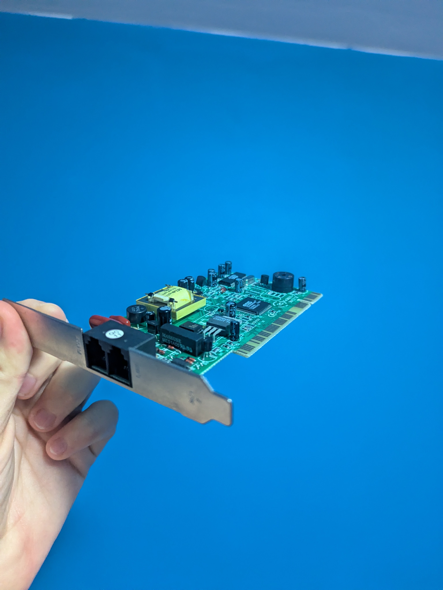

Fig. 1-1: Here is an old motherboard I have in storage. It still has BIOS equipped instead of UEFI. I'm not sure what its form factor is, but if I had to guess, it would be a Mini-ATX or an ITX.Fig. 1-2: Here is my great-grandmother's motherboard. It was extracted from a case that started rusting a dangerous amount. Despite the hell that the case has gone through, the motherboard is in great condition.Fig. 1-3: Here are two loose HDDs. The one on the left has 80GB, but I'm not sure about the one on the right.Fig. 1-4: A SoundBlaster-16 PCI adapter card.

Fig. 1-5: A landline PCI adapter card. Of course, I can't really use this. Landline is not common at all anymore.Fig. 1-6: I may be wrong, but I believe this is a serial PCI adapter card. This port was used for peripheral devices, or mice/keyboards that used this port over the PS/2 ports.Fig. 1-7: A USB 2.0 PCI adapter card.Fig. 1-8: This is an old PSU. It has a selector for two different voltage types, which typically depends on the region you're in (yes, different places in the world provide different amounts of voltage to your appliances). The one I am holding right now does not work.Fig. 1-9: Here is the same PSU. This image shows the cords provided by the unit. As you can probablly see, it also provides floppy support.Fig. 1-10: Here is a large PC speaker that was apart of my great-grandmother's PC case. Later PC speakers would become much smaller, and then would not be used anymore.Fig. 1-11: Here are the large floppy disks I gave you. I kept three for myself in the case I could find a way to use them.Fig. 1-12: Here is my great-grandmother's rapidly rusting PC case. I unfortunately had to throw this case out, but I kept the components from within. They were in surprisingly good condition.Fig. 1-13: PSU wasteland.Fig. 1-14: My cat wants her breakfast at 4:00 AM. Yelling and jumping onto the nearest object seems to give that message the most efficiently.